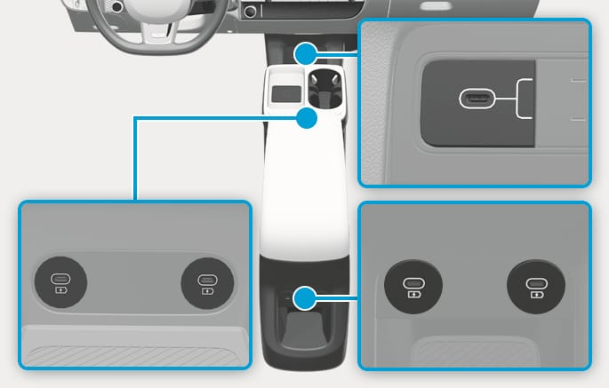

USB 충전 단자(C 타입)

2C_ChargingOutlet
시동을 건 후 USB 충전 단자에 스마트폰, 태블릿 등 각종 기기를 연결해 충전할 수 있습니다.
-
충전 상태는 기기의 화면 등 표시 장치를 통해 확인하십시오.
-
충전 중 기기의 온도가 조금 올라갈 수 있지만, 이것은 충전 시 발생하는 정상적인 현상입니다.
-
일부 충전 방식이 다른 USB 타입 기기는 충전되지 않을 수 있습니다. 이런 경우, 전용 어댑터를 사용해 충전하십시오.
-
시판되는 'C to A 타입 USB 변환 어댑터'를 통해 기기를 연결하는 경우, 기기가 충전되지 않을 수 있습니다.
-
USB 충전 단자는 충전 기능만을 제공하며, 미디어 연결 및 재생 기능은 제공하지 않습니다.
-
차량의 배터리가 방전되는 것을 방지하려면 시동이 켜진 상태에서 충전 기능을 사용하십시오.
-
USB 충전 단자에 이물질이나 음료, 물 등 수분이 유입되지 않도록 주의하십시오. 충전 단자가 손상될 수 있습니다.
-
사용 전류 용량이 3,000 mA(3.0 A)를 초과하는 기기는 연결하지 마십시오.
-
'C to A 타입 USB 변환 어댑터'를 사용해 전자 기기를 충전하려는 경우, 차량에 맞는 순정 어댑터를 사용하십시오. 과전류 방지 및 안정화를 위한 장치가 내장되어 있지 않은 제품이나 규격에 맞지 않는 제품을 사용하는 경우, 차량의 USB 충전 단자 및 연결된 기기가 손상될 수 있습니다.
-
품질이나 성능이 부적합한 부품 사용으로 인한 USB 단자 및 인포테인먼트 시스템 고장 발생 시 보증기간에 해당하더라도 보증수리를 제공하지 않습니다. 순정 부품은 품질과 성능을 당사가 보증하는 부품입니다.